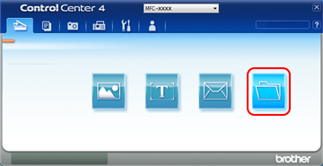

Skanna ett dokument som en PDF-fil med ControlCenter4
| 0. | Om skärmen ControlCenter4-läge visas väljer du Avancerat läge och trycker sedan på OK. |
|---|

| 1. | Klicka på Fil. |
|---|

| 2. | Tryck på Skanna. Maskinen börjar skanna. Mappen där skannade data sparas öppnas automatiskt. |
|---|

- Välj PDF (*.pdf) i rullgardinslistan Filtyp.
- Du kan ange filnamnet som du vill använda för dokumentet.
- Du kan spara filen i standardmappen eller välja den mapp som du vill använda genom att klicka på knappen
 (Bläddra).
(Bläddra). - Du kan välja en upplösning för skanning i rullgardinslistan Upplösning.
- Du kan välja dokumentstorlek i rullgardinslistan Dokumentstorlek.